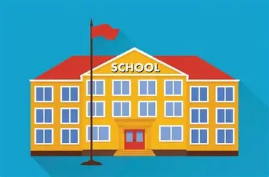

My school is good.
Here is photo of random my school

Welcome to Sunrise Public School
Inspiring Minds, Shaping Futures
About Us
At Sunrise Public School, we believe in holistic education that nurtures both academic excellence and personal growth.
Founded in 1995, our institution has grown into a vibrant community of learners, educators, and innovators.
Our Vision
- Excellence in Academics
- Creativity in Action
- Integrity in Character
- Service to Society
Facilities
- 🏫 Modern Classrooms with smart boards
- 📚 Library with 10,000+ books and digital resources
- ⚽ Sports Complex for football, basketball, and athletics
- 💻 Computer & Robotics Lab for hands-on learning
- 🎨 Art & Music Studio to spark creativity
Achievements
- 🥇 National Science Olympiad Winners – 2023
- 🎭 Annual Drama Festival Champions – 2024
- 🏆 Best Eco-Friendly Campus Award – 2025
Admissions
Now Open for 2026–27!
Apply online through our Admissions Portal or visit the school office between 9:00 AM – 4:00 PM.
Contact Us
📍 Sunrise Public School, Green Valley Road, Vadodara
📞 +91 98765 43210
✉️ info@sunriseschool.edu